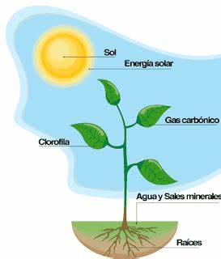

Las plantas son verdes gracias a un color especial que tienen dentro llamado clorofila. La clorofila es como una pintura verde que las plantas usan para atrapar la luz del sol. Esta luz es como comida para las plantas, les ayuda a crecer y mantenerse fuertes. Así que, cuando ves una planta verde, ¡es porque está capturando la luz del sol para hacerse grande y saludable
